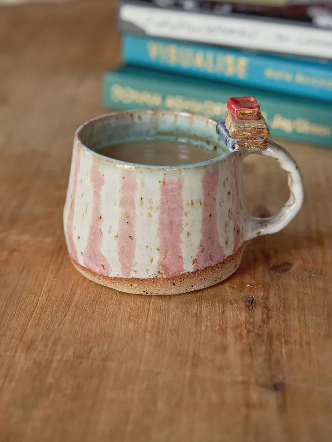
手作陶瓷馬克杯
職人手拉坯，粉白釉彩帶細小鐵斑，每只都是獨一無二。
NT$ 680
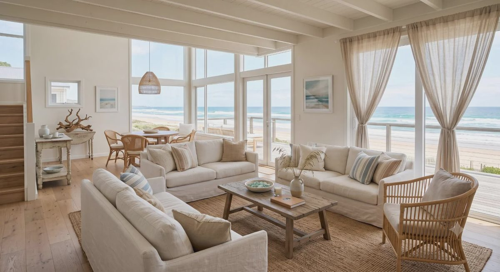
十件圍繞「海島日常」挑選的生活道具，從餐桌到出門都好使用。

職人手拉坯，粉白釉彩帶細小鐵斑，每只都是獨一無二。
NT$ 680
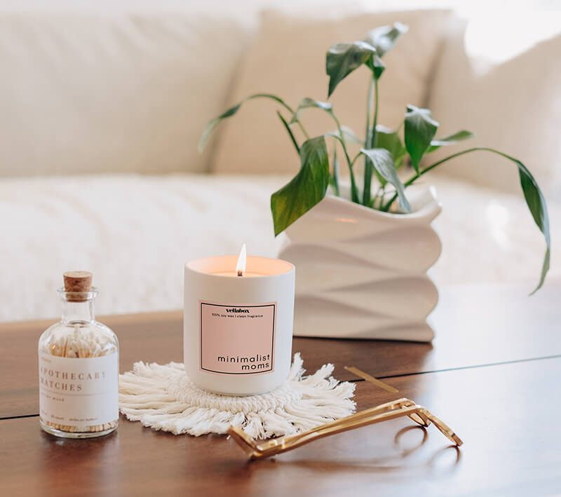
大豆蠟慢燃 45 小時，琥珀與鼠尾草交織出溫暖木質調。
NT$ 520
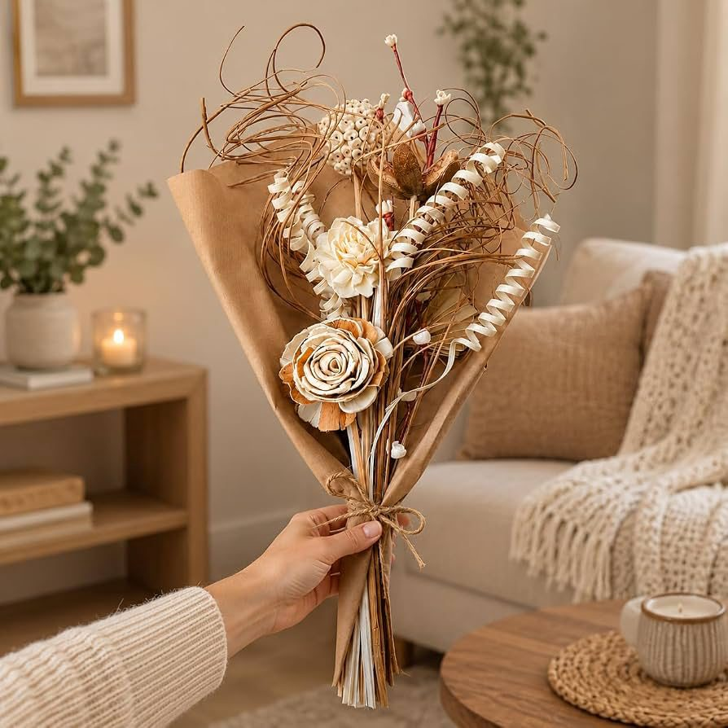
索拉玫瑰與藤圈花材，無須澆水，可擺放一年以上。
NT$ 450
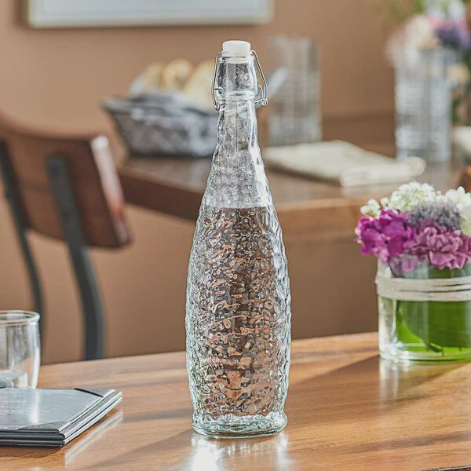
不鏽鋼扣環密封，錘紋玻璃折射光影，950ml 大容量。
NT$ 390
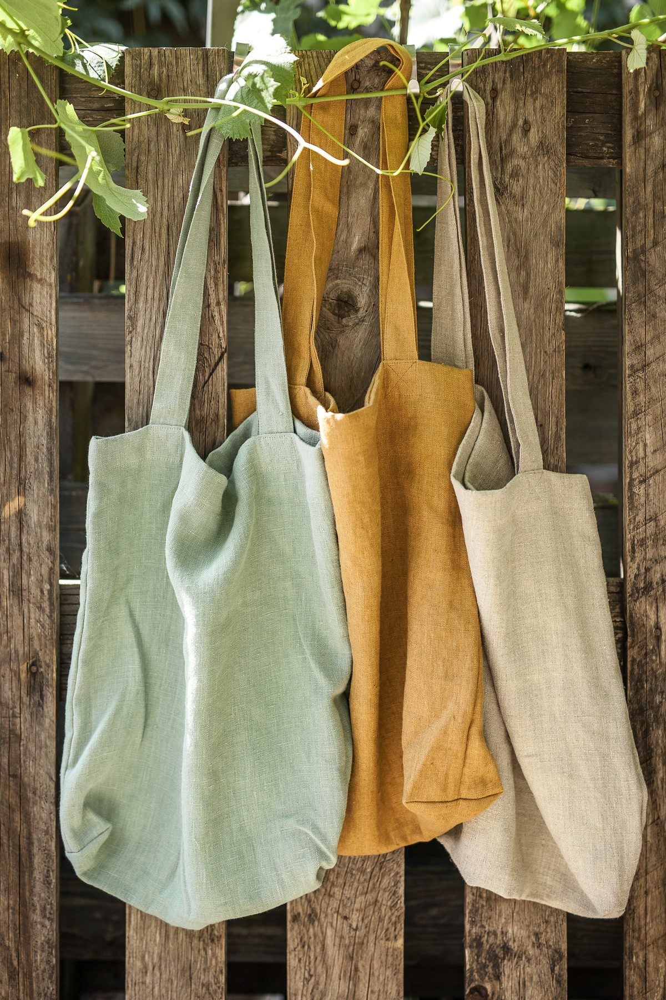
100% 歐洲亞麻，芥末黃／灰綠／原麻三色，越用越有味道。
NT$ 560
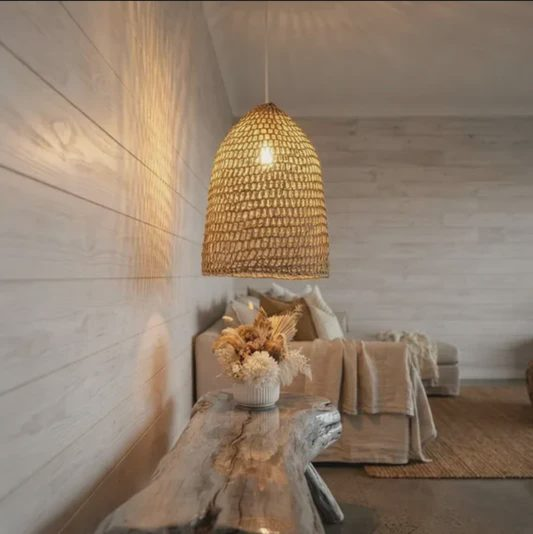
手工藤編燈罩，光線穿縫灑落牆面，營造度假氛圍。
NT$ 1,680
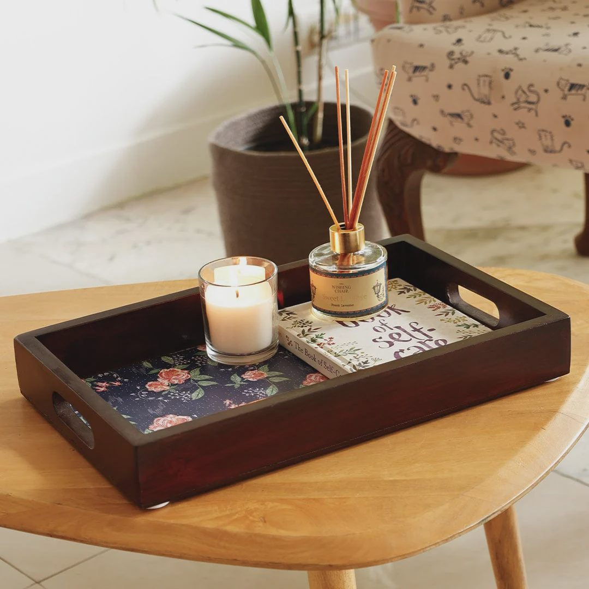
實木框身鑲嵌古典花卉布面，端茶、擺香氛都優雅。
NT$ 740
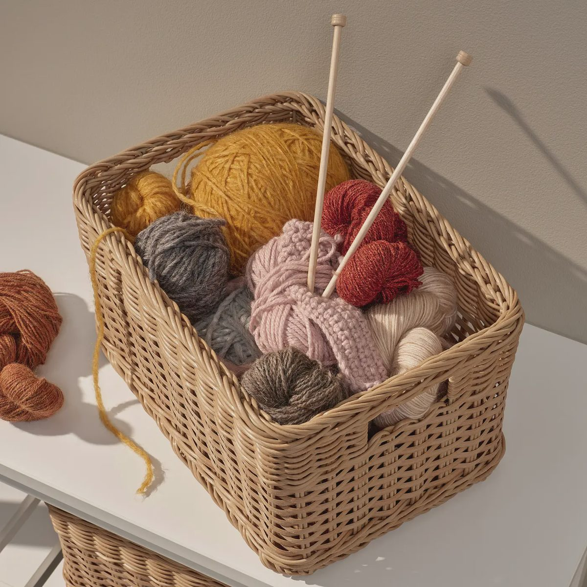
雙提把設計，承重佳，毛線、雜誌、玩具一籃收納。
NT$ 490
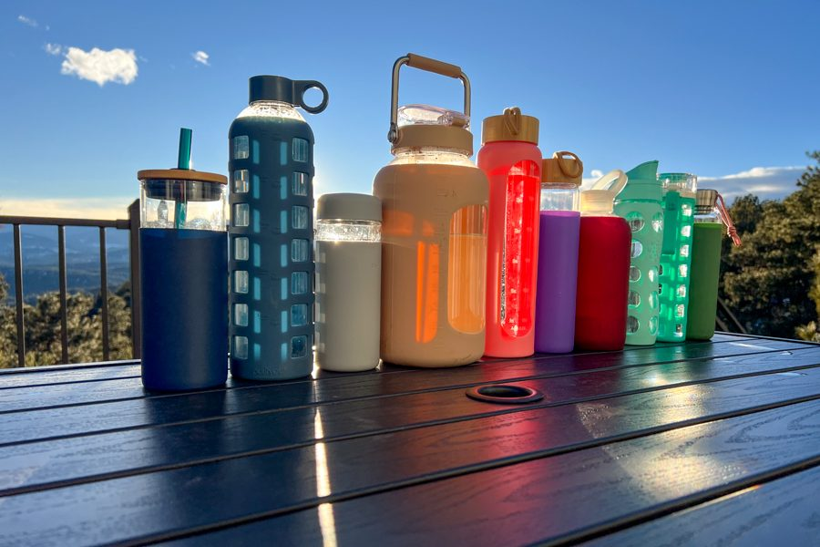
六色玻璃瓶搭配矽膠護套，野餐露營一眼認出自己的水壺。
NT$ 1,200
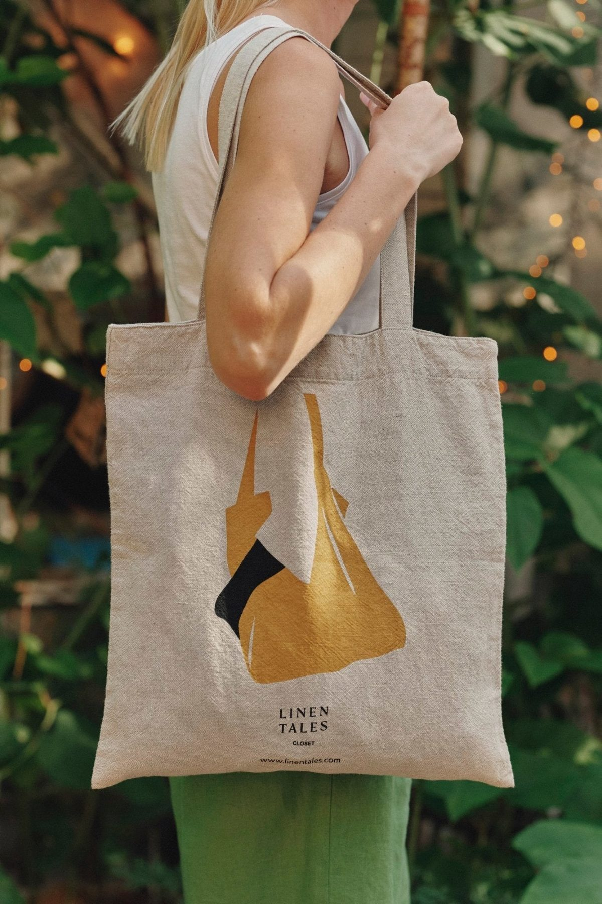
設計師聯名帆影圖案，亞麻棉混紡，輕便好折收。
NT$ 620
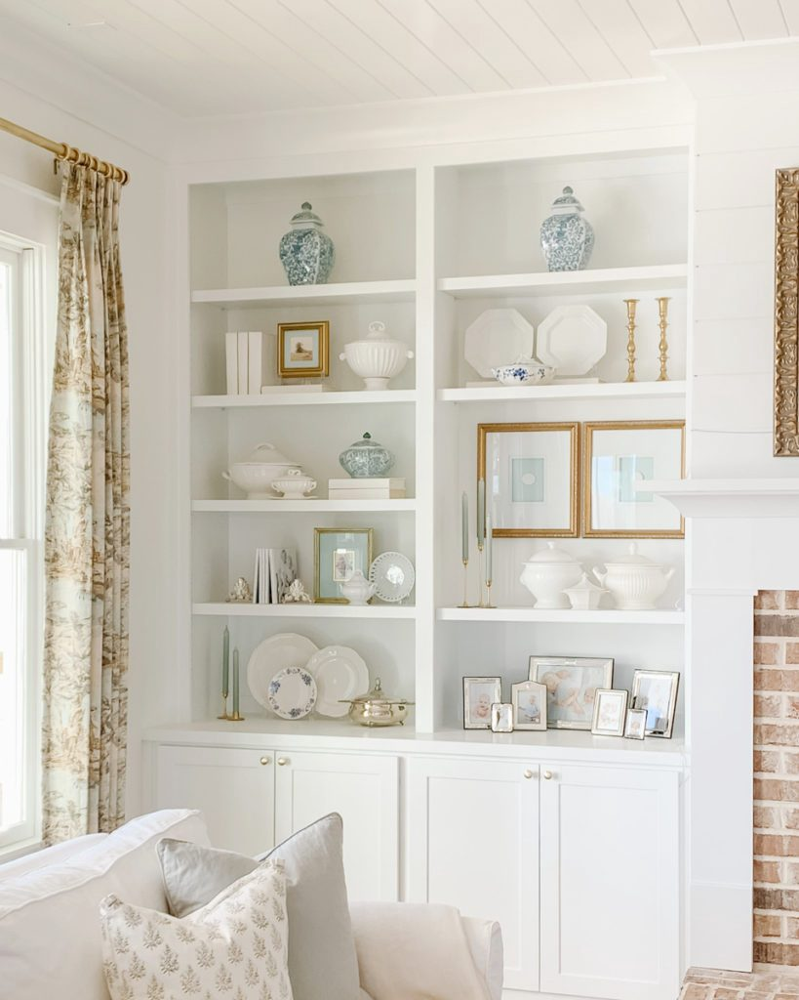
「嶼光選物」始於東海岸的一間小工作室。我們相信，好的生活道具不需要多，只需要每一件都被頻繁且愉快地使用了很久。
因此我們親自走訪產地，只挑選天然材質、可修復、可長久使用的物件，讓它們隨著時間，在你的生活中長出自己的樣子。
現貨商品於 1～2 個工作天出貨；預購商品頁面會標示預計到貨時間，出貨後以 Email 通知。
手作與釉燒過程可能產生細小黑點、釉痕或尺寸微差，屬正常現象，也是手作器物獨特之處。
單筆滿 NT$ 1,500 免運，未滿酌收 NT$ 80；大型家具類另依物流報價。
收到商品 7 日內如有瑕疵可換貨；香氛、食品類商品因衛生考量拆封後恕不接受退換。
避免長時間曝曬與潮濕，定期以乾布擦拭即可；藤編若受潮變軟，陰乾後會恢復原有韌性。